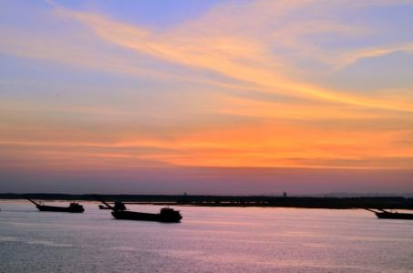

| 雄峰俊岭 | 滔滔大河 | 都市盛景 | 互动 | |||||
|
古称“云梦泽”,为我国第二大淡水湖。跨湘鄂两省,它北连长江、南接湘、资、沅、酆四水,号称“八百里洞庭湖”。洞庭湖的意思就是神仙洞府,可见其风光之绮丽迷人。洞庭湖浩瀚迂回,山峦突兀,其最大的特点便是湖外有湖,湖中有山,渔帆点点,芦叶青青,水天一色,鸥鹭翔飞。春秋四时之景不同,一日之中变化万千。古人描述的“潇湘八景”中的“洞庭秋月”、“远浦归帆”、“平沙落雁”、“渔村夕照”、“江天暮雪”等,都是现在东洞庭湖的写照。
历代文人墨客都对美丽的洞庭湖作过热情的吟咏。北宋著名政治家、军事家和文学家范仲淹的《岳阳楼记》,从岳阳楼的视角（居高临下）对洞庭湖变化多端的风光,描绘得淋漓尽至,脍炙人口。洞庭湖的气势雄伟磅礴,洞庭湖的月色柔和瑰丽。即使是在阴晦沉霞的天气,也给人别致、谲秘的感觉,激起人们的游兴。碧波万顷的洞庭湖不愧为“天下第一水”。泛舟湖间,心旷神怡,其乐无穷。  滨湖的风光极为秀丽,许多景点都是国家级的风景区,如：岳阳楼、君山、杜甫墓、杨么寨、铁经幢、屈子祠、跃龙塔、文庙、龙州书院等名胜古迹。在西洞庭湖与长江的接界 处——城陵矶,有一块名为三江口的地方。从此处远眺洞庭,但见湘江滔滔北去,长江滚滚东逝,水鸟翱翔,百舸争流,水天一色,景色甚是雄伟壮观。刘海戏金蟾、东方朔盗饮仙酒、舜帝二妃万里寻夫的民间传说正是源于此地…… 湖中最著名的是君山,君山风景秀丽。它是洞庭湖上的一个孤岛,岛上有72个大小山峰,这里每天有渡轮来往航程大约一小时。游览群山需要用一天时间,早上去,下午返。既去了君山,又可畅游洞庭湖,真是一举两得。君山原名洞庭山,是神仙洞府的意思。相传4000年前,舜帝南巡,他的两个妃子娥皇、女英追之不及,攀竹痛哭,眼泪滴在竹上,变成斑竹。后来两妃死于山上,后人建成有二妃墓。二人也叫湘妃、湘君,为了纪念湘君,就把洞庭山改为君山了。现有古迹二妃墓 、湘妃庙、柳毅井、飞来钟等。君山的竹子很有名,有斑竹、罗汉竹、方竹、实心竹、紫竹、毛竹等。这里每年都举办盛大的龙舟节、荷花节和水上运动。 洞庭湖是著名的鱼米之乡,其物产极为丰富。湖中的特产有河蚌、黄鳝、洞庭蟹、财鱼等珍贵的河鲜,还有君山名茶、罗汉竹、方竹、实竹、紫竹、斑竹、毛竹等竹类产品,种类亦很繁多。 |
||||